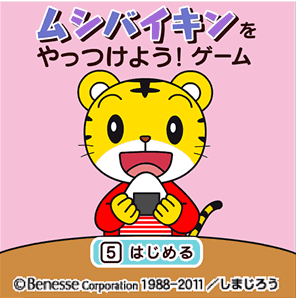

<a name="top" id="top"></a>
<br />
<br />


<table width="90%" cellpadding="0" cellspacing="0" align="center">
<tr>

<td align="center">
<span style="font-size:x-small;">ﾑｼﾊﾞｲｷﾝを やっつけよう!ｹﾞｰﾑ</span><br />  
</td>
</tr>
<tr>
<td align="center">
<br />
<br />

</td>
</tr>
<tr>
<td align="left"><span style="font-size:x-small;color:#333333">
数字ｷｰの｢5｣を押して､ﾑｼﾊﾞｲｷﾝをやっつけるｹﾞｰﾑです｡楽しみながら､歯みがきの必要性を知ってもらうきっかけをつくります｡【Flash&nbsp;72KB】<br /><br />
■遊び方<br />
決定ﾎﾞﾀﾝで次に進みます｡<br />
※音声つきです｡ﾏﾅｰﾓｰﾄﾞを解除してお使いください｡<br />

</span></td>
</tr>
<tr>
<td align="center">
<object declare id="ausb" data="src/musibaikin_ausb.swf" type="application/x-shockwave-flash" >
<param name="bgcolor" value="ffffff">
<param name="loop" value="on">
<param name="quality" value="high">
</object>
<a iswf="ausb" href="src/musibaikin_ausb.swf" style="color:#ff6699;"><span style="color:#ff6699;font-size:medium">ﾀﾞｳﾝﾛｰﾄﾞ</span></a>
</td>
</tr>
</table>
